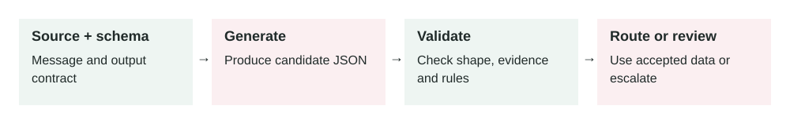

Structured outputs
In this lesson
2026-10-07 · New lesson · About 6 minutes

Figure 13. An accepted shape is only the first checkpoint. Verify evidence and business rules before using the values.
1. What the concept means
Structured outputs let you ask an AI model for data in a defined shape. Your application supplies a schema, a specification of field names, value types, and allowed choices. The result might be a JSON object with a category, a short explanation, and a flag saying whether someone needs to review it.
Think of a support agent completing a form. The agent can interpret a customer's message, but the form gives each answer a fixed place. Your software can then read the category without searching through a paragraph.
Three checks matter. First, is the response valid JSON? Second, does it follow the schema? Third, are its values supported by the input and acceptable under your business rules? A response can pass the first two checks and still fail the third. A correctly formatted category can be the wrong category.
Some providers enforce the shape during generation using constrained decoding, which limits which output tokens the model can select. A token is a piece of generated text. Support and schema restrictions vary by provider. This lesson uses provider-neutral examples rather than a copy-and-paste API request. Read the current Claude structured output documentation for one concrete implementation.
2. Why it matters in production
A person understands “This looks urgent; send it to billing.” Software needs consistent labels and explicit fields. Otherwise, changing a phrase can break a parser or send a ticket to the wrong queue.
Structured outputs give the model and your application a shared contract. They help with extraction, classification, search filters, and drafts for other systems. They also make tests easier: check the individual fields rather than comparing entire paragraphs.
They do not give the model permission to perform an action. A model-generated customer ID, destination, or requested operation still needs checks in your backend. Your application should obtain identity and permissions from the authenticated session.
3. How it works
The illustration above shows two checkpoints. The shape check asks whether software can consume the object. The evidence and policy check asks whether it should use the object.
- Define the task and a small schema. Give each field a clear purpose.
- Send the model the source text, interpretation rules, and schema through the provider's supported structured output mechanism.
- Inspect completion status. A refusal, interrupted stream, or output limit can require a different handling path.
- Parse and validate the response with a maintained validator. Do not rely on a regular expression to repair JSON.
- Check meaning against the source and your business rules. Resolve IDs through trusted services and reject unsupported values.
- Store or route an accepted result. Record validation failures and review decisions so you can test improvements later.
If a call fails, choose a limited recovery policy. One retry for a temporary service error may be reasonable. A missing fact needs clarification; retrying the same input repeatedly cannot create evidence.
4. Apply it in a project
Start with a support classifier. This is an illustrative JSON Schema, not a complete provider request:
{
"type": "object",
"properties": {
"category": { "type": "string", "enum": ["billing", "login", "other", "unknown"] },
"evidence": { "type": ["string", "null"] },
"needs_review": { "type": "boolean" }
},
"required": ["category", "evidence", "needs_review"],
"additionalProperties": false
}
An enum is a fixed list of allowed values. Here it prevents accidental category names such as payment_problem. The unknown choice represents insufficient evidence. A required field may contain null when the schema permits it; required means the field must exist. See the JSON Schema object reference for field and object rules.
Tell the model: “Classify only from the supplied message. Copy a short supporting passage into evidence. Use unknown and request review when you cannot determine the category.” Then have the backend check that the passage exists in the message. That check proves the passage was copied, but a reviewer or evaluation still needs to check whether it supports the category.
Keep the schema in version control. When changing a field, update the consumer and tests together. Persist the schema version beside the result so older records remain understandable.
5. Two practical examples
Example A: Routing customer support
Illustrative input: “I paid for the Pro plan, but my account still shows Free.”
Possible model output:
{
"category": "billing",
"evidence": "I paid for the Pro plan",
"needs_review": false
}
The backend validates the object, confirms the evidence is present, and places the ticket in the billing queue. It does not upgrade the subscription from this message. An authorized service checks the actual payment and subscription records before any account change.
Hypothetical outcome: The ticket reaches the appropriate team without a brittle paragraph parser. If the input is “My plan is wrong,” the classification is less certain. Your evaluation policy may require review even when the model sets needs_review to false. That flag is advice, not an independent safety guarantee.
Example B: Turning meeting notes into CRM data
Illustrative input: “Acme wants a demo next week. Sara will coordinate. Budget has not been discussed.”
Use a separate schema for company, contact, next_action, budget, and timing_text. A possible result is:
{
"company": "Acme",
"contact": "Sara",
"next_action": "schedule_demo",
"budget": null,
"timing_text": "next week"
}
The application looks up matching CRM records and presents a draft update. Multiple companies named Acme require a user choice. “Next week” stays as source text until the application has the meeting date, timezone, and enough detail to choose an exact appointment.
Hypothetical outcome: A salesperson receives a usable draft with the budget visibly unknown. The model has not invented a spending amount or silently scheduled a meeting. Confirming the record and time is part of the workflow.
6. Common mistakes and trade-offs
- Treating valid data as true data. Measure field accuracy and unsupported claims separately from schema validity.
- Forcing every field to have a value. Missing information becomes invented information. Define null or unknown where needed.
- Trusting the model's review flag. Use application rules for cases that always need review, and test how often the model misses ambiguous inputs.
- Making the schema too large. Unrelated fields increase complexity and make evaluation harder. Split distinct jobs when useful.
- Retrying without a limit. Put a cap on retries and time spent. Ask for missing information or send the case for review.
- Changing a contract silently. A renamed field can break a consumer even if generation succeeds. Version the contract.
Strict output constraints improve predictability, but they restrict expressive answers and can add provider-specific setup overhead. Keep free text where explanation is the actual product. Use a schema where another program needs specific fields.
7. Best practices
Test the system with clear inputs, missing facts, contradictory statements, and text that tries to override the task. Treat instructions inside customer messages as data. Measure exact field accuracy, review rate, unsupported values, latency, and cost on the same test set after changes.
Separate extraction from actions. First generate a candidate object. Then validate evidence, permissions, and business rules. Finally request approval or perform an authorized action. Protect source text and logs according to their sensitivity; structured data can contain personal information too.
Handle refusals and incomplete responses explicitly. Provider features and accepted schemas change, so check current documentation before implementing an integration. Keep schemas small and stable, and retain enough version information to diagnose failures.
8. Practice
You are building a bug-report classifier. A report says: “Checkout sometimes freezes. I don't know which browser. Started after yesterday's release.”
Design fields for area, browser, release_reference, and needs_review. Which fields should permit unknown values? Would you let this output automatically open a high-priority incident?
Reveal a suggested answer
Use area = checkout, browser = null, release_reference = yesterday's release, and needs_review = true. Keep the release reference as source text until you can resolve it using the report timestamp and deployment records. The message alone does not establish the scale or severity of the failure. Create a triage draft and check monitoring and additional reports before declaring an incident.
Sources and further reading
- Claude structured outputs: implementation, provider constraints, and failure cases.
- JSON Schema object reference: properties, required fields, and extra fields.
Bring your proposed schema back to this chat for feedback on missing-data handling and validation.